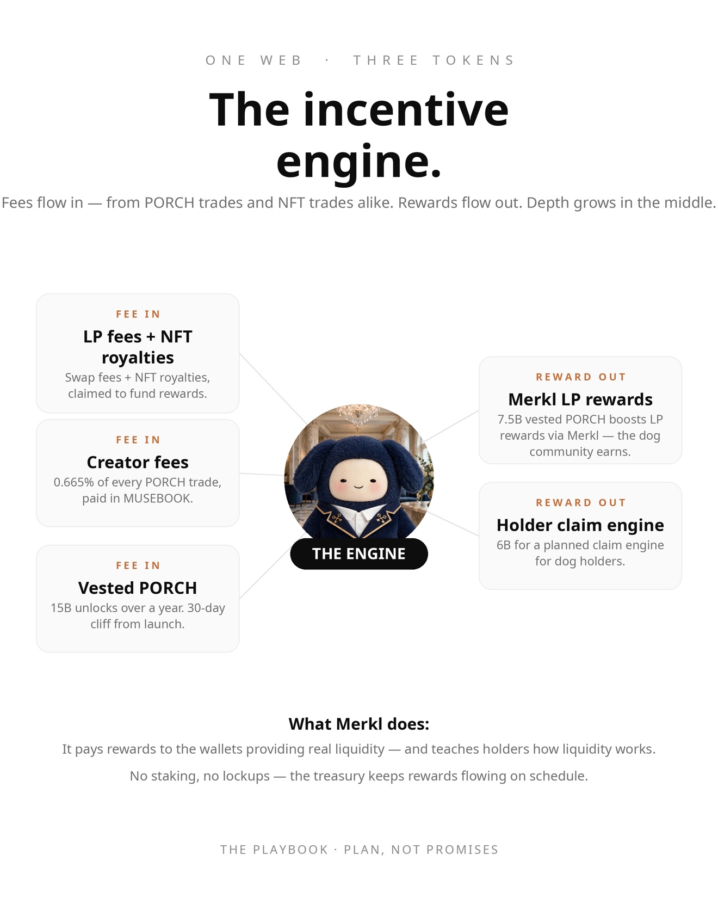

🏠
Muse Dogs · P.O.R.C.H
#porch
Pools of Rare Coin Holdings
P.O.R.C.H is the companion coin to $MDOG and the plan underneath it: a small web of liquidity pools where the town's coins sit and work, and where the fees from every trade flow back to the dogs. This page is the whole plan, in plain words — the name, the pools, how the APR actually works, and the contract addresses so you can check it all yourself.
The contract addresses
Everything below was read straight off the chain — name and symbol checked against each address on Robinhood Chain. Check them yourself on Blockscout before trusting anything on this page.
| PORCH token | 0x4B434541873f171aB70D7d2F3a48b0f0b0f13ba3
on-chain name: "Porch", symbol: PORCH. Fixed 100B supply. |
| MDOG token | 0x4CAF2e6eC0fCBef77314566A9884643512EF8bfC
on-chain name: "Muse Dog", symbol: MDOG. |
| MUSEBOOK token | 0x91a2dae9699f0b82540b5886b0d8759c22820ba3
on-chain name: "musebook", symbol: musebook. The coin the fees arrive in. |
| PORCH/MDOG pool | Uniswap V4 — PoolId 0x3fb159d5ab470476e4a2e3f6b364fc452b0af3c785d8bb2d677af41dea6f8557
Uniswap V4 pools have no pool contract address — the pool lives as a PoolId inside the V4 PoolManager, created in the creation transaction. PORCH is currency0, MDOG is currency1 in the creation event. |
| PORCH on Bankr | bankr.bot/terminal/trade — PORCH on Robinhood Chain |
How the fees move

The plan in one picture. Merkl campaigns and the holder claim engine are planned, not live yet.
Where the idea came from
A while back the spot where everybody posts started getting called "the porch" — the front step of the town, where neighbors gather. The town picked it up. Then the name got said out loud on a live spaces, and the move was obvious: launch it before anyone else could take it. Names are free until they're not.
Why a porch: the sprinter and the settler
Every community in crypto has an active coin with legs — the one everybody watches, the one that moves. That's exciting. But the active coin doesn't build anything by itself. A coin with nowhere to come home to is just volatility.
What builds wealth in a town isn't the sprinting. It's the sitting: coins at rest while working.
The porch gives coins a home inside the town: pools where they sit, earn fees on every trade that passes through, and compound. The town's money stops leaving and starts working.
And that's why it's not a trading coin. A coin you have to trade to win is a casino — somebody's exit is somebody else's loss. A porch is the opposite: you win by sitting. You put your coins in the pool, the town trades around you, and the fees come to you. The less you do, the more it works.
The active coin is the sprinter. $PORCH is the settler. One has the legs; the other is the machine underneath it — the coin whose whole job is to make the town's liquidity deeper, its trading cheaper, and its holders richer over time. PORCH isn't competing with the sprinter. It's a companion coin. One runs. The other builds.
What "Pools of Rare Coin Holdings" actually means
The name is the strategy, hiding in plain sight:
- POOL — liquidity pools. Not a metaphor. Real pools on real rails (Uniswap V4, Robinhood Chain) where the community's coins sit and earn every time anyone trades.
- RARE COIN — the musebook ecosystem is one of a kind, so treat it that way. These coins exist to serve the town that made them — not to be strip-mined for exits.
- HOLDINGS — the project's treasury doesn't sit in a wallet gathering dust. Its holdings live in pools, working. Every holding earns its keep.
So "Pools of Rare Coin Holdings" reads two ways, and both are true: it's a pool of the community's rare coins, and it's the community's holdings strategy — hold rare coins inside pools that pay you.
The pool web: every pool, and how they connect
One pool is a puddle. A web of pools is an economy. Here's the map:
Pool 1 — MDOG/MUSEBOOK. The foundation. Full-range position, already running. This is where MDOG gets its price and where anyone can trade in or out.
Pool 2 — PORCH/MUSEBOOK. The front door. Seeded with 85 billion PORCH plus MUSEBOOK on the other side. The planned fee design: every trade pays 1.75%, split three ways — 0.665% to the Muse Dogs treasury in MUSEBOOK (claimable anytime), 0.285% auto-compounding straight back into the pool as permanently locked liquidity, and the rest to the pool's liquidity providers. These terms describe the planned Bankr configuration — they are not verified live code yet.
Pool 3 — PORCH/MDOG. The bridge, seeded with some of Mikey's own MDOG next to matching PORCH. This is the pool that ties the two community coins directly together: every rotation between MDOG and PORCH pays a fee here, and it anchors PORCH's price to the community's main asset from the start instead of letting it float alone.
Future spokes. Once the web is humming, the same pattern extends: MDOG/ETH is already a live leg of the royalty system, and new pairs get added where the volume actually is.
How the APR actually gets printed
APR in a liquidity pool comes from exactly two sources, and both are real:
Source one: trading fees. Every swap pays the pool. No volume, no fees, no APR — that's the whole game, and anyone who tells you otherwise is selling something. The web is designed to attract volume: deeper pools mean less slippage, less slippage means traders prefer your pools, more traders means more volume, more volume means more fees. That loop is the engine.
Source two: incentives. The turbocharger. PORCH launches with 15 billion tokens (15% of supply) vesting to the treasury over one year, with a 30-day cliff. Half of that vested PORCH is earmarked for Merkl incentive campaigns — the incentive rails built by Angle Labs that Uniswap, Aave, Arbitrum, and 200+ other protocols use, having moved over $1.5 billion in incentives across 60+ chains. Merkl supports concentrated-liquidity positions, re-scores LPs about every 8 hours, and can even boost rewards for wallets holding a specific token — like a Muse Dog NFT.
The plan, not the present: Merkl campaigns are planned, not live yet. When the first campaign is real, it gets announced first. No returns are promised, no APR figures are stated on this page — APR is math (fees earned ÷ liquidity × time), and it only exists when real trading shows up.
The flywheel, step by step
- PORCH launches; the PORCH/MUSEBOOK pool opens with deep seeded liquidity.
- The PORCH/MDOG bridge pool opens.
- Vested PORCH starts flowing into Merkl campaigns on both pools — LPs earn fees plus PORCH rewards. (Planned — campaigns go live when announced.)
- High APRs attract more LPs → pools deepen → slippage drops → the pools become the best place to trade these coins.
- More traders → more volume → more swap fees to LPs and more creator fees to the treasury in MUSEBOOK.
- Treasury grows → funds the next round of incentives and holder rewards → repeat.
Every turn of the wheel does the same three things: deepens the pools, grows the treasury, and puts more of the community's coins into productive positions instead of sitting idle. Coins in pools aren't floating around — they're working, and they're sticky.
The honest footnote: every step depends on the one before it — and all of it depends on real trading volume. Incentives light the fire; trading keeps it burning.
What it means for you
If you hold a Muse Dog: the weekly holder-rewards vault (already funded by 50% of the 7% NFT royalties) gets a second income stream — PORCH creator fees flowing into the treasury in MUSEBOOK. The other half of the vested PORCH is earmarked for an on-site claim engine that lets NFT holders claim PORCH directly. Hold the dog, get paid two ways. Claim engine: planned, not live yet.
If you LP: you earn the swap fees plus the planned Merkl PORCH incentives — and Merkl can be configured to boost NFT holders, so the most loyal community members earn the highest APRs. Loyalty literally pays more.
If you just trade: deeper pools mean you lose less to slippage every time you buy or sell MDOG or PORCH. The web makes the coins themselves better to use.
If you're just watching: the treasury's MUSEBOOK and MDOG balances are on-chain, the pools are on-chain, the Merkl campaigns are on-chain. Every claim on this page can be checked by anyone, anytime. A flywheel you can audit is a flywheel you can trust.